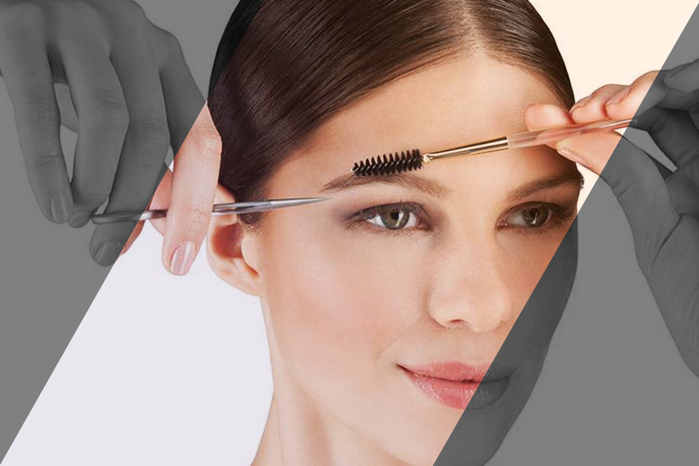
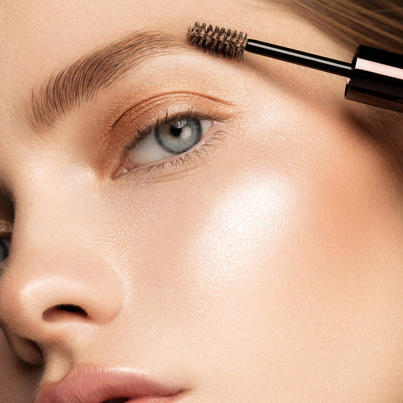
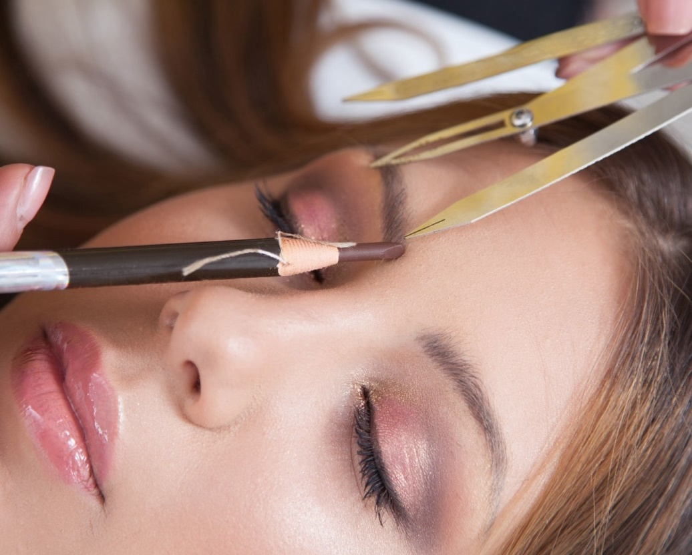

Бьюти-индустрия развивается с каждым годом все мощнее и если раньше красота девушек была зависима только от nail-мастеров и hairdresser’ов, то сейчас появляются новые профессии, например, – brow maker.
Все началось в 2007 году с бренда BROW craft. Свою деятельность Анастасия начала самостоятельно на дому, выполняя маникюр своим первым клиентам. В 2012 году, с повышенным спросом на ее услуги, Анастасия арендовала кабинет и расширила сферу услуг - обучениями. Это была отрывная точка в ее карьере инструктора. С 2014 года Анастасия принимала приглашения с выездными программами по городам России, за все время было свыше 100 выездов и свыше 5000 обученных мастеров вживую! Параллельно растила команду мастеров Перми, расширив площадь во второй раз. Если ранее акцент был на ногти, то после расширения появились новые услуги и новые мастера в ее команде. В 2020 году Анастасия приобрела недвижимость в собственность, где 1,5 года шел основательный ремонт по проекту дизайнера Сергея Коченевских. В 2022 году произошел ребрендинг. Теперь Школа и Студия два разных направления под одной крышей BROW craft studio & school. Сейчас курсы ведут уже в Бразилии, Испании, Америке, Казахстане, Германии, Нидерландах, Эстонии.
ОТКРЫТИЕ НАШЕЙ ОРГАНИЗАЦИИ
BROW craft- уникальная школа, в которой все сделано для людей, с заботой о здоровье и качестве программ. Преподаватели - настоящие мастера, вдохновлённые и влюблённые в свою работу. С большим опытом и собственными покарёнными вершинами. Мы не только обучаем качественно, но и влюбляем в профессию!
Благодаря прохождению курсов у нас, вы сэкономите время, деньги и нервы. Получете чёткий результат и останетесь под нашим крылом на долгие годы. Благодаря прохождению курсов у нас, вы сэкономите время, деньги и нервы. Получете чёткий результат и останетесь под нашим крылом на долгие годы. Каждый урок продуман и направлен на 100% результат. Техники, которыми пользуются более 20 000 мастеров со всего мира.
Без привязки к торговым маркам! Мы обучаем ТЕХНИКАМ, которые Вы сможете применить с любым материалом! Обучайтесь современным техникам, вместе с командой профессионалов. Все создано для того, чтобы вдохновлять, раскрывать и расширять уникальность каждого ученика.
Старцева Анастасия @ewerliy - BOSS, создатель студии, ментор и наставник для владельцев nail бизнеса.
Мы находимся в новом жилом комплексе Гулливер (рядом с парком Горького) У нас светлая и уютная студия с удобной зоной ожидания Рядом много парковочных мест Всегда рады угостить Вас чаем или кофе Всегда подберем удобное для Вас время. Работаем по вечерам и в выходные. команда профессионалов - бровистов, узкоспециализирующихся на оформлении бровей. Брови - это важная часть лица. Они могут кардинально изменить внешность женщины, добавить лоска или, наоборот, сделать лицо неухоженным. От их формы зависит выражение лица. Именно поэтому так важно регулярно следить за бровями! Наши мастера индивидуально подходят к каждому клиенту и подбирают именно ту форму, которая подойдет именно Вам. Каждый из мастеров имеет большой теоретический и практический опыт , а главное любовь к тому, что они делают.
Наши студенты имеют возможность получить глубокие знания в области моды, красоты и стиля, которые понадобятся для успешной работы в beauty-industry. Кроме того, навыки и умения, полученные на курсах, окажутся полезными в повседневной жизни для каждой девушки. Полученный опыт позволит создавать самые разнообразные образы, что, в свою очередь, положительно скажется на качестве жизни. По окончанию курса вы получите сертификат, свидетельство или диплом государственного образца с присвоением профессии и занесением в федеральный реестр документов образования.
